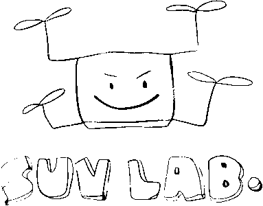

자율주행 위치인식
충북대학교 지능로봇공학과

PART 2. KALMAN FILTER
Kalman Filter 강의 슬라이드
g-h 필터에서 출발해 Bayes 필터, 1 차원과 다변량 Kalman filter, 비선형 필터링과 Unscented Kalman Filter 까지 다루는 5 일 과정.
하루 3 시간, 이론과 실습을 같은 슬라이드에서 진행. 슬라이드의 코드는 브라우저에서 바로 실행.
Day 1
Day 2
Day 3
Day 4
Day 5
보는 방법
- 발표 모드: 오른쪽 아래 "전체 화면" 버튼 또는 F. 다음 장은 Space 또는 방향키, 종료는 Esc
- 코드 실행: 코드 블록의 "실행" 버튼 또는 Ctrl+Enter. 코드는 직접 고쳐서 다시 실행 가능
- 슬라이더: 파라미터 슬라이더가 있는 예제는 슬라이더를 놓는 순간 다시 실행
- 주석 토글: 선택한 줄에 Ctrl+/. 결과 창은 Esc 로 닫음
- 첫 실행: 파이썬 런타임을 내려받느라 20 초 안팎 소요, 이후는 즉시 실행. 인터넷 연결 필요
- 권장 브라우저: Chrome, Edge 등 최신 브라우저